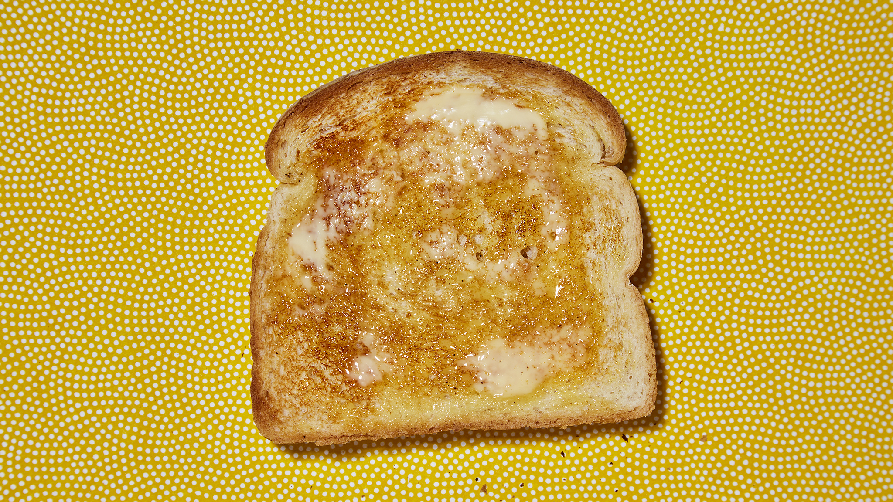

TOAST THE BREAKFAST OF CHAMPIONS

Description
Making toast is the equivalent to boiling water except easier to ruin
Toast was created in the 1200's when Marie Antoinnette told the
Independant Party of the Nouveau france to let them eat toast.
obvioulsy the common was very excited about this approach and showed their appreciation
by storming the capitol on january 6th.
ingrediants
- Bread
- Butter
- Mapple Syrup
Process
- Toast the bread
- Spread butter on top of the bread
- Pour mapply syrup over that bad boy. They stormed the capitol for this.